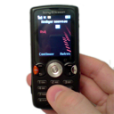

Send, store and export your SMS
|  |
The recipients field lets you choose one or more persons from your AddressBook. In order to select one, you can use scroll down and pick up your contact, or type the first letters of its name and let SwissSMS complete your typing. Each plugin sets the number format it uses. Therefore, the menu contains only the persons whose number suits the current plugin. You can also type a "free" mobile phone number that does not belong to someone in your AddressBook.
If you have set a photo to your AddressBook contact, il will appear left to the message text field. Also, if AddressBook knows your contact's AIM screenName and that your iChat is connected to AIM, your contact' status will appear as a collored bullet, right to her or his phone number. If you prefer chatting with your contact rather than texting, just click on the bullet and your message will appear in iChat.
Your message can contain as many characters as you want. If it exceeds what is allowed by your operator web site, SwissSMS will cut the message into slices. The slices will be numbered and sent one after the other. A status line displays always displays how many messages will be sent.
When the recipient field and the message field are filled, the "Send" button becomes active. Click on it to send your message. The message is sent in two steps: login and sending. The progress bar shows you the login and sending status. Once you have hit "Send" (or command-return or enter), you can't cancel the sending. If you really did a mistake, quit SwissSMS. After the message was successfully sent, the message goes in the sent messages database, display in the lower part of the window.
To read the messages you have sent, clic on a message and choose "Show Messages Inspector" (or command-I) in the "Messages" menu. This will display a window with the message details, as well as your contact AddressBook image and her or his AIM status. You can click on the AIM status to start an iChat conversation with her or him. You can also print the message window if you need a proof :=).
Your messages are not jailed in SwissSMS! There are two ways to export them:
Select "Export to CSV..." in the "Messages" menu. This will save your messages in a file separated by tabulations. You can then open this file in Microsoft Excel or import it in a database.
BluePhoneElite is an excellent commercial software managing calls and SMS of your Bluetooth cell phone. If BluePhoneElite is installed, the menu "Messages" > "Export to BluePhoneElite..." is enabled and lets you export your messages in BluePhoneElite. This export functionality only works with BluePhoneElite 1, not 2.
Remove the selected messages with the "Remove" button. This button removes the selected messages and saves.
Since version 1.7, SwissSMS stores all your logins and passwords in the keychain. If you have not yet entered your account information, you will be prompted just before sending an SMS. Check the Remember this password in my keychain option if you don't want to enter your account information each time you send an SMS.
Account information in the keychain is shared among applications. It means that if you already entered your login ans password for a network operator in Safari or Camino for example, SwissSMS will be able to use them and vice versa. All you need to do is click the Always Allow button when you are prompted to confirm access to keychain.
If you misentered your login or your password, you can change it in the keychain using the Keychain Access utility which is located inside the /Applications/Utilities folder. As a shortcut, you can use the "Open Keychain..." button in the Preferences.
You can use SwissSMS in command-line mode. It means you can send SMS from your own scripts. Just call SwissSMS.app/Contents/MacOS/SwissSMS this way :
SwissSMS -r 0791234567 < message.txt
SwissSMS -r "Steve McQueen" < message.txt
SwissSMS -s OrangeCH -r 0791234567 -l myLogin -p myPassword < message.txt
Please note that you can use the SwissSMS preferences, or pass the service, the login and the password as arguments. The message is given through stdin.
SwissSMS installs the Automator Action ~/Library/Automator/Send SMS.action. You can send messages to an AddressBook person output from another action. The Automator Action is installed or updated if needed at SwissSMS launch.
SwissSMS installs the Automator Action ~/Library/Address Book Plug-Ins/Send SMS with SwissSMS.bundle. While in AdressBook, you can clic on a person's mobile phone and choose in the popup menu : "Send message with SwissSMS". This will open a set SwissSMS ready, you just have to type the message and click "Send". The Address Book plugin is installed or updated if needed at SwissSMS launch.
For bug reports and feature requests, use the issue tracker. For the rest, do not hesitate to contact me: http://seriot.ch/contact.php or swisssms@seriot.ch.
Don't forget that SwissSMS is an opensource software and that you can modify it as you like. It would be especially nice and useful if you, Cocoa developers, could add support for your own SMS operators (Bluewin, anyone?). It's easy! See the sources. There is a plugin template with a readme. Please drop me a line if you write a plugin or if you need some help. I'll be happy to add your plugin to SwissSMS or link it from the website.
Thank you.
Nicolas Seriot and Cédric Luthi, SwissSMS 1.8.3, November 27th, 2007